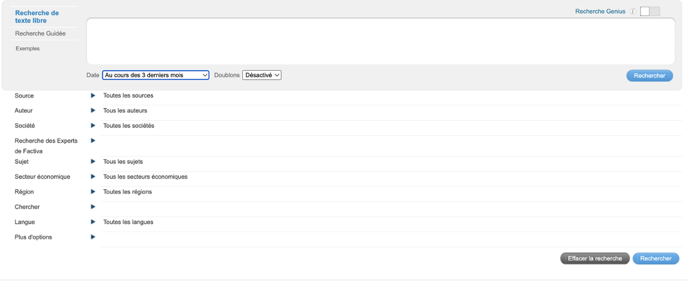
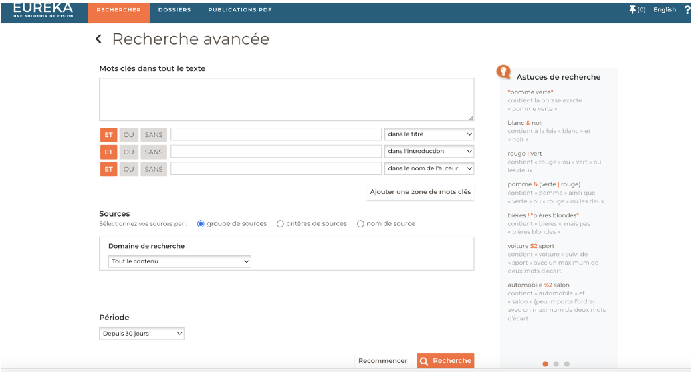

5 Les outils de collecte de données
La révolution numérique engendrée par l’émergence du Big Data représente un important défi pour le monde des sciences sociales (Manovich, 2011; Burrows et Savage, 2014). Elle constitue également une opportunité de recherche enrichissante et innovante permettant une compréhension plus accrue des phénomènes sociaux étudiés par la communauté scientifique (Connelly et al., 2016). Cette meilleure compréhension est permise, entre autres, par l’accès à des données massives concernant les trois acteurs clés de la société démocratique: les citoyens, les médias et les décideurs (Schroeder, 2014; Kramer, 2014). Si l’accès à ces données représente un défi éthique et théorique, tel qu’explicité lors des chapitres précédents, elle représente également un défi technique pour les chercheurs.euses voulant exploiter le potentiel et les opportunités offertes par les données massives (Burrows et Savage, 2014). Le chapitre qui suit vise à offrir un portrait de certains outils de collecte de données pouvant être exploités par les chercheurs.euses en sciences sociales visant à tirer profit de la révolution numérique. À travers ce chapitre, il sera question d’outils permettant de collecter des données de sondages, des données médiatiques, de même qu’une panoplie de données textuelles par le biais d’extracteurs. Ce chapitre offre donc un tour d’horizon de certains outils de collecte de données à la disposition de la communauté scientifique souhaitant entamer des recherches en sciences sociales numériques.
5.1 Le Big Data et les différents acteurs de la société :
Le champ d’étude de la science politique repose sur l’étude de trois types d’acteurs distincts ayant un impact sur la condition socio-économique et politique d’une société : les décideurs, les médias et les citoyens. La recherche sur les décideurs comprend entre autres l’analyse des politiques publiques, des partis politiques, de stratégies électorales ou encore l’analyse de discours de politiciens ou d’organisations. L’étude des médias repose largement sur le rôle des médias dans la formation des priorités et des jugements des citoyens quant aux enjeux politiques, de même que sur leur capacité d’influencer l’agenda des politiciens. En ce qui concerne les citoyens, le champ d’étude de l’opinion publique se consacre à l’analyse des comportements et des attitudes politiques des individus. De plus, de nombreuses recherches visant à comprendre le rôle des citoyens dans une société démocratique portent sur l’influence de la société civile de même que sur l’effet des mouvements sociaux.
Chacun de ces champs de recherches se voit confronté à une panoplie de défis théoriques et techniques en lien avec l’émergence des données massives. La révolution technologique permet une étude plus approfondie des phénomènes auxquels sont confrontés les différents acteurs de la société démocratique, en raison de l’importante quantité de données accessible aux chercheurs.euses. Toutefois, la collecte de données permettant de mener à terme de telles études peut s’avérer complexe. Pour chacun des trois acteurs démocratiques énumérés précédemment, les sections suivantes énumèrent et expliquent les capacités techniques d’outils permettant aux chercheurs.euses d’accéder à des données massives. Bien que d’autres outils existent et offrent des résultats satisfaisants, les méthodes suivantes sont particulièrement pertinentes dans une optique d’étude des sciences sociales numériques en raison de leur capacités techniques de même que par la relative simplicité de leur utilisation.
5.2
5.3 Plateformes de sondages et collecte de données
Malgré certaines différences méthodologiques, toute recherche doit analyser et interpréter des données fiables et de qualité afin d’émettre des résultats (Nayak & K. A., 2019). Notamment lorsqu’il est question d’étudier les citoyens et l’opinion publique, il est nécessaire d’accumuler suffisamment de données auprès d’un échantillon assez grand afin d’inférer des conclusions sur la population.
Quelques méthodes sont couramment utilisées pour la collecte de données sont le sondage, le panel, l’enquête, ou le questionnaire. Cette section se concentre sur le sondage. Ils peuvent être manuels ou électroniques, et dans le second cas, peuvent être administrés par ordinateur, par courriel ou via le web (Nayak & K. A., 2019). La différence majeure entre les méthodes manuelles et les méthodes numériques réside dans le fait que les premières impliquent un contact direct entre le chercheur et le répondant, tandis que dans le cas des secondes le contact est indirect (Evans & Mathur, 2018). L’arrivée des données massives et des outils numériques offre une panoplie de nouvelles opportunités de collecte de données pour la communauté scientifique. Lorsqu’exécutée manuellement, la collecte de données et la réalisation de sondages peuvent devenir des tâches lourdement fastidieuses, et de facto, demander énormément de ressources pour mener une recherche à grande échelle. C’est pourquoi les technologies du numérique peuvent faciliter cet aspect de la recherche en fournissant des plateformes de sondages et de collecte de données. De plus, les sondages représentaient en 2016 environ 20% du chiffre d’affaires de l’industrie globale du marketing (Evans & Mathur, 2018). Ces chiffres montrent la pertinence de l’acquisition de compétences nécessaires à la formation de sondages, tant dans le monde académique que professionnel. Le numérique permet donc de créer un questionnaire, de cibler une population et de la contacter, d’entreposer les données des répondants pour ainsi les visualiser, le tout à un coût réduit et plus rapidement que s’il avait été conduit manuellement (Nayak & K. A., 2019). Ainsi, les sondages en ligne ont une portée internationale, permettent le suivi de la ligne du temps, offrent des options qui contraignent le répondant à répondre à certaines questions et permettent d’utiliser des arbres de logique avancés que les sondages manuels ne permettent pas.
5.3.1 Les principales plateformes web.
Il existe un large éventail de plateformes de sondages et de collecte de données qui peuvent être utiles dans un contexte académique. Cet ouvrage se limite à cinq d’entre elles: Qualtrics, REDCap, SurveyMonkey, Google Forms et Typeform. Cependant, il n’est pas déconseillé de se renseigner sur les autres plateformes disponibles en fonction de ses besoins et de ses ressources. Voici une liste non-exhaustive: LimeSurvey, Zoho Survey, Qualaroo, Formstack, Wufoo, Checkbox Survey, SmartSurvey, QuickTapSurvey, SoGoSurvey, Snap Surveys, AskNicely, Opinio, Alchemer, Cognito Forms, Feedbackify.
5.3.1.1 Qualtrics (https://www.qualtrics.com/)
Cette plateforme est une des plus reconnues et utilisées à l’international, tant dans le milieu académique que dans le secteur privé. En plus d’offrir des outils de collecte de données et de sondages, Qualtrics est utilisé dans le marketing et dans la gestion de l’expérience client. Il est donc pertinent de se familiariser avec cet outil, car il offre des compétences pratiques pour la recherche, mais également pour obtenir des opportunités de carrière. Qualtrics offre plusieurs services pratiques pour la collecte de données, avec des options flexibles pour la programmation et l’administration des sondages. Par exemple, Qualtrics s’adapte à différents formats en fonction de l’appareil du répondant (Evans & Mathur, 2018).
5.3.1.2 REDCap (https://www.project-redcap.org/)
Research Electronic Data Capture (REDCap) permet de construire et de gérer des sondages ainsi que des bases de données. Pour accéder aux services de cette application, il est nécessaire d’être un partenaire du REDCap Consortium ou membre d’une organisation qui en fait partie. Seules les organisations à but non lucratif peuvent adhérer au Consortium. Les données et les sondages qui y sont produits peuvent être partagés et utilisés par différents chercheurs issus de diverses institutions. L’exportation vers différents types de fichiers (Excel, PDF, SPSS, SAS, Stata, R) est possible. Ce qui distingue REDCap des autres applications est sa compatibilité avec les dossiers médicaux, sa sécurité pour les données sensibles, ainsi que son approche académique à la collecte de données par sondage.
5.3.1.3 SurveyMonkey (https://www.surveymonkey.com/)
SurveyMonkey se distingue des autres applications en permettant de construire et gérer des sondages/formulaires à l’aide d’une interface conviviale sans toutefois perdre de ses fonctionnalités. En plus d’avoir recours aux nouvelles technologies de l’I.A. pour aider à construire des sondages adaptés à vos besoins, cette application propose plusieurs centaines de modèles personnalisables élaborés par des experts dans le domaine. SurveyMonkey permet également l’analyse des données et la création de rapports directement sur l’application, en plus de permettre l’exportation vers d’autres types de programmes. Les forfaits varient en gamme de tarifs, allant du gratuit avec des fonctionnalités restreintes, jusqu’aux options payantes destinées aux particuliers et aux entreprises.
5.3.1.4 Google Forms (https://docs.google.com/)
Cette application se distingue par sa simplicité et son accessibilité, en grande partie grâce à l’omniprésence de google tant dans le monde académique que dans la vie courante. Google Forms est inclus dans le forfait de base du Google Workspace, ce qui le rend largement compatible avec les autres applications de Google, en plus d’être disponible gratuitement. Bien que ses fonctionnalités soient moins avancées que celles de ses compétiteurs, Google Forms peut convenir pour des sondages plus simples et rapides grâce à son interface conviviale, à sa fonction d’analyse de données directement sur la plateforme, ainsi qu’à ses modèles préfabriqués.
5.3.1.5 TypeForm (https://www.typeform.com/)
Si votre objectif est de produire des formulaires avec une esthétique attrayante, moderne et interactive, TypeForm est la plateforme idéale. Elle permet de se concentrer sur l’expérience de l’utilisateur et de l’impliquer dans le sondage grâce à son aspect visuel. Cette plateforme dispose d’une option gratuite, ainsi que plusieurs forfaits payants. Typeform est également compatible avec plusieurs applications de gestion du flux de travail (Zapier, Google Sheets, Slack, etc).
5.3.2 Les limites des sondages en ligne
Néanmoins, les sondages en ligne comportent des défis, notamment en ce qui concerne l’échantillonnage, les taux de réponse et les caractéristiques des non-répondants. Il est également nécessaire de se méfier des enjeux éthiques et de confidentialité (Nayak & K. A., 2019). Comme la généralisation est essentielle pour conférer une valeur scientifique à ses résultats de recherche, les sondages en ligne ont leurs limites. En effet, il est crucial de connaitre la population cible pour effectuer des inférences valides, et l’échantillonnage doit reposer sur des caractéristiques précises. Même si des informations démographiques peuvent être collectées et des quotas utilisés, il n’est toutefois pas réellement possible de confirmer les informations sur le répondant (Andrade, 2020). Les sondages traditionnels où l’on retrouve un contact direct sont plus susceptibles de permettre de brosser un portrait plus complet du répondant (Evans & Mathur, 2018). Les répondants avec des biais peuvent également plus facilement répondre aux sondages en ligne et limiter la généralisation (Andrade, 2020). Les sondages en ligne sont également souvent perçus comme des pourriels, ont généralement de faibles taux de réponse, sont impersonnels et peuvent avoir des instructions peu claires. Ils ont également leurs lots d’enjeux de confidentialité (Evans & Mathur, 2018).
Conseils méthodologiques à la réalisation d’un sondage numérique
(Evans & Mathur, 2018)
L’article de Evans et Mathur (2018) est une revue de littérature observant l’évolution des sondages numériques depuis la parution de leur dernier article sur le sujet en 2005. À travers cet article, les auteurs offrent des conseils méthodologiques en fonction de leur analyse de contenu de la littérature scientifique. Les conseils d’Evans et Mathur (2018) sont résumés ci-dessous. Afin d’obtenir plus de détails, n’hésitez pas à vous référer directement à cet article. De plus, bien qu’il s’agisse d’un article crédible et largement documenté, il est toujours pertinent de consulter des sources spécifiques à vos besoins.
1.Définir le but du sondage avant la méthodologie. Lorsque possible, inclure des hypothèses testables et des méthodes basées sur des fondations théoriques.
2.Choisir le type de sondage.
3.Décider des méthodes d’échantillonnage, des quotas et des échéances.
4.Déterminer le responsable de la construction du sondage.
5.Soyez transparent en divulguant le but du sondage, la façon dont les données seront utilisées ainsi que l’auteur du sondage.
6.Les questions et les catégories de réponses doivent être élaborées de manière objective et dans une perspective de convivialité.
7.Les sondages doivent être assez légers pour favoriser un taux de réponse positif, mais assez complet pour avoir l’information nécessaire.
8.Ils doivent également être attrayant afin de favoriser leur complétion par le répondant.
9.S’assurer de l’anonymat du répondant.
10.Il faut régulièrement procéder à des tests afin de corriger les faiblesses du questionnaire.
11.Déterminer qui administre le sondage, qui collecte l’information, et qui analyse les données.
12.Établir un échéancier pour les différentes étapes de l’étude.
13.Suite à la collecte de données, entreposer les données brutes dans un fichier électronique.
14.Utiliser les méthodes appropriées (qualitatif ou quantitatif), et analyser les données selon les buts de l’étude.
15.Dans le cas d’une recherche académique, il est important d’avoir une section dédiée aux limites de l’étude.
16.Conserver l’anonymat des répondants lors de l’analyse et de la publication.
17.Agir sur les résultats. Rien ne sert de conduire un sondage qui ne contribue pas à la croissance du savoir ou n’apporte pas de changement stratégique ou organisationnel.
18.Toujours se plier à un code d’éthique rigide.
Il s’agit donc ici d’un court résumé des plateformes de sondages et de la collecte de données en ligne, tentant de couvrir l’essentiel de cet outil afin de vous aider lors de votre parcours académique, ou simplement comme aide-mémoire pour la réalisation d’un sondage. Les outils énumérés précédemment permettent une étude approfondie de phénomènes concernant les citoyens. Bien sûr, il n’est pas possible de couvrir l’entièreté de cet outil très complexe et ayant évolué dans le temps. Cette section ne sert donc que de point de départ si vous vous intéressez à l’élaboration d’un sondage numérique. Il vous est donc recommandé de vous renseigner davantage avec d’autres ressources afin de compléter ce qui est indiqué dans cet ouvrage.
5.4 Factiva : outils de récolte de données médiatiques
L’émergence de nouvelles technologies de même que la fragmentation médiatique, causée notamment par l’apparition de chaînes de nouvelles en continu, ébranlent considérablement les écosystèmes médiatiques occidentaux (Chadwick, 2017). Un récent courant de recherche se penche sur le rôle des médias relativement aux comportements des individus dans une perspective de fragmentation médiatique. Ces changements de dynamique médiatiques permettent aux individus de choisir leurs sources d’information. Cette fragmentation aurait conséquemment pour effet de contribuer à la formation de chambres d’écho. Ainsi, les études sur les effets des médias visent à comparer les agendas de différentes organisations médiatiques de même que de comprendre le cadrage de la nouvelle qu’ils offrent aux citoyens. Pour effectuer de telles études comparées, l’accès à des données médiatiques est essentiel. L’arrivée de données massives permet de nouvelles avenues de recherche pour les chercheurs.euses en sciences sociales en raison de l’importante quantité de données accessibles aux chercheurs.euses, ce qui permet une compréhension accrue des réalités médiatiques modernes.
L’outil Factiva offre un accès à l’ensemble des articles d’une panoplie de médias provenant d’une vaste sélection de pays. Le moteur de recherche est opéré par Dow Jones et offre également l’accès à des documents d’entreprises. En revanche, l’accès qu’il offre aux contenus médiatiques est particulièrement pertinent pour la communauté scientifique en communication et en sciences sociales. Il offre l’accès à plus de 15 000 sources médiatiques provenant de 120 pays. Il permet de télécharger une quantité illimitée de documents RTF, un format de fichier de texte, pouvant contenir jusqu’à 100 articles chacun. En outre, ils peuvent être sélectionnés automatiquement en cochant le bouton proposant de sélectionner les 100 articles de la page de résultat. Chaque page de résultat contient 100 articles à la fois. Enfin, Factiva permet également de filtrer les doublons.
Additionnellement, cet outil permet également de lancer une requête de recherche par mots-clés et par date qui permet, par exemple, de récolter les articles médiatiques concernant un sujet précis dans une ligne de temps déterminée. De manière plus précise, Factiva permet de filtrer la recherche d’articles par source, par date, par auteur, par sociétés, par sujet, par secteur économique, par région et par langue. Disons qu’un.e chercheur.euse désire comparer la couverture médiatique d’une élection donnée. Il peut, par le biais de Factiva, sélectionner tous les articles contenant le mot « élection » dans une sélection de médias, et ce, durant la période de l’élection. Les mots clés sélectionnés peuvent être adaptés aux désirs de l’utilisateur.ice de manière à inclure des mots qui peuvent être mis ensemble ou à un maximum d’intervalle de mot. L’utilisation des signes « and » et « or », aussi connus sous le nom d’opérateurs booléens, permettent d’ajouter un mot dans la requête de recherche. En ajoutant near5, l’on peut spécifier qu’il doit y avoir un maximum de 5 mots entre les deux mots recherchés. L’on peut également mettre certains signes à la fin de mots, ce qui permet de préciser le champ de recherche. Par exemple, dans une étude récoltant des articles sur les immigrants, le mot immigrant pourrait être écrit de la manière suivante : immigra*. Ainsi, tous les mots débutant par ce suffixe seraient inclus de la recherche d’article, ce qui comprend donc : immigrant, immigration, immigrants, immigrante, etc. La Figure 1 est une capture d’écran de l’interface de recherche de Factiva. Ainsi, en ajoutant un opérateur booléen, l’on peut préciser un champ de recherche. L’utilisateur.rice pourrait, par exemple, rechercher des articles sur les immigrants syriens, et rajoutant les opérateurs “and” ou encore “or”, de même que le mot « syri* », l’étoile étant rajoutée pour inclure le plus de mots possible.

Ainsi, Factiva permet d’avoir accès facilement à des données utiles pour de l’analyse textuelle d’articles médiatiques. Comme les textes deviennent accessibles rapidement et simplement aux chercheurs.euses, cet outil optimise considérablement l’analyse de contenu par thèmes ou par ton.
Cependant, ce ne sont pas tous les médias qui sont accessibles sur Factiva. Dans l’optique ou un média recherché n’est pas trouvable sur Factiva, le logiciel Eureka représente une bonne alternative. Eureka se concentre principalement sur les médias francophones (autant au Québec qu’en Europe). La structure d’Eureka est similaire à celle de Factiva. En effet, Eureka permet de filtrer des articles médiatiques par requête de recherche adaptée à la source, la date ou encore l’auteur. Toutefois, les requêtes de recherche doivent être formulées d’une manière quelque peu différente. Elles doivent donc être adaptées au fonctionnement d’Eureka. Les articles doivent être sélectionnés à la main, et peuvent être téléchargés dans un document PDF pouvant contenir un maximum de 50 articles à la fois. La Figure 2 contient l’interface de recherche d’Eureka.

Il existe aussi une panoplie d’outils permettant un accès à des données médiatiques. Quoique Factiva soit intuitive et que de nombreuses universités possèdent des licences permettant d’exploiter la plateforme, plusieurs alternatives s’offrent à la communauté scientifique. NexisUni, qui comprend entre autres l’outil LexisNexis Academic particulièrement prisé par le champ d’études de communication aux États-Unis, représente une excellente alternative. C’est également le cas de NewsBank qui permet lui aussi un accès à un vaste répertoire d’articles médiatiques. Les chercheurs.euses peuvent choisir la plateforme qui leur convient le mieux, en prenant en compte notamment l’accès qui peut leur être fourni par l’institution universitaire les employant.
En somme, la révolution numérique permet un accès sans précédent aux données médiatiques, ce qui permet des analyses approfondies du rôle des médias traditionnels dans une société démocratique.
5.5 Les extracteurs : avoir accès à des données massives via du code.
Chacun des acteurs démocratiques énumérés précédemment peut également être étudié par le biais d’extracteurs qui offrent un accès à des données numériques massives. Les extracteurs de données numériques sont des infrastructures de code permettant d’extraire des données brutes d’une source définie. La section suivante explique comment les extracteurs peuvent être utiles dans un contexte de recherche en sciences sociales numériques.
Les données en lien avec les décideurs sont souvent accessibles sur des sites gouvernementaux. Toutefois, certaines identifications peuvent être nécessaires et l’accès peut être compliqué, particulièrement dans une perspective de données massives. C’est dans cette optique que les extracteurs de données numériques peuvent être utiles. Un code peut extraire de manière automatisée les débats des parlements, les communiqués de presse des gouvernants, les plateformes électorales des partis politiques, ce qui offre un accès inégalé aux chercheurs.euses aux données de décideurs. Dans une autre optique, des extracteurs peuvent également offrir l’accès aux données provenant de médias socionumériques comme Twitter (maintenant X) ou Facebook . Un extracteur peut, par exemple, être en mesure de répertorier l’ensemble des Tweets de journalistes, de politiciens ou encore de citoyens de manière automatisée, offrant un accès inégalé aux chercheurs.euses à des données massives exclusives. L’élaboration d’extracteurs est toutefois facilitée par l’existence d’API (Application programming interface) sur les plateformes exploitées. L’API d’un site ou d’une application permet à un tierce parti d’avoir accès à du code expliquant le fonctionnement de la plateforme étudiée, ce qui en facilite l’extraction de données. Par exemple, Twitter possédait avant les changements de directions récents un API qui facilitait l’élaboration d’un extracteur. En contrepartie, Facebook ne possède pas d’API, ce qui rend l’accès à ses données beaucoup plus complexe. Un extracteur peut également offrir l’accès à des données médiatiques, en codant un accès à des fils RSS ou encore aux HTML des médias extraits.
L’élaboration d’un extracteur est toutefois une tâche complexe qui requiert un certain nombre de connaissances en lien avec les langages de programmation. Les chapitres 4 et 5 du présent ouvrage offrent justement un survol du langage fonctionnel R, qui est utilisé par de nombreux développeurs lors de l’écriture d’extracteurs. R est également reconnu pour ces fonctionnalités statistiques qui sont, elles aussi, abordées ultérieurement dans ce livre.
5.6 Covidence : outil de récolte d’articles scientifiques
Comme mentionné précédemment, les outils numériques de données massives facilitent le travail des personnes chercheuses lors de la récolte de données dans le cadre d’analyses empiriques. Cependant, la révolution technologique offre également des outils pouvant être utiles lors d’autres étapes du cycle de la recherche. Il s’agit notamment du cas de la revue de littérature, alors que de nombreux outils offrent aux personnes chercheuses des ressources permettant d’élaborer un cadre théorique exhaustif par le biais de données massives sur la littérature scientifique. L’outil Covidence, géré par une compagnie sans but lucratif, en est un exemple particulièrement prisé du monde académique lors de l’entreprise de revues de littérature.
La plateforme en ligne Covidence est utilisée pour faciliter les revues systématiques de littérature. Cette dernière permet de réduire drastiquement le temps d’accomplissement du travail en plus de le rendre plus simple et plus intuitif. L’outil a été développé pour mieux gérer et organiser l’évaluation de quantité importante d’études scientifiques. L’exécution d’une revue de littérature sur Covidence se fait par le biais d’un double codage. C’est-à-dire que l’évaluation des études se fait manuellement par deux codeurs travaillant de manière autonome et qui mettront en commun leurs résultats à la fin de l’exercice. L’outil est reconnu pour ses trois étapes précises : « Title and abstract screening », « Full text review » et « Extraction ». Covidence permet d’importer des données massives provenant de base de données bibliographiques. En effet, l’outil lance des requêtes auprès de multiples bibliothèques, ce qui offre l’accès à des milliers d’études sur le champ étudié par les personnes chercheuses. Ces requêtes sont adaptées aux besoins spécifiques de la personne chercheuse voulant explorer en profondeur un domaine de la littérature scientifique.
La première étape, soit le « Title and abstract screening », consiste en la révision des titres et des résumés des articles récoltés. Pour rendre le travail davantage efficace, il est nécessaire d’inclure des critères précis pour analyser les titres et résumés d’articles. En se servant du jugement et des critères qui étaient recherchés, les individus doivent éliminer ou accepter selon la pertinence de l’article quant à la littérature étudiée. Cette partie est souvent longue, puisque la littérature existante est souvent massive. Il est donc important pour les personnes chercheuses de se rencontrer à maintes reprises pour discuter des conflits de jugement et pour trouver des compromis. En outre, cette étape, plutôt longue, s’avère très utile et motivante, puisqu’il est possible de développer un jugement critique davantage raffiné et de s’instruire dans une littérature continuellement plus précise.
Une fois avoir complété la revue des titres et des résumés, il faut entamer le « Full text review » qui, comme l’indique le nom, consiste à la révision complète des textes sélectionnés. Cette étape demande d’analyser chaque texte, puis de voter « oui », « non » ou « peut-être » quant à la conservation du texte dans la revue de littérature. Le vote permet donc soit d’exclure l’article, de le retenir ou de l’envoyer à la prochaine étape. D’un autre côté, les conflits rendent le travail beaucoup plus long, puisque les codeurs.euses ont un texte entier à argumenter. Ainsi, cette partie du travail, bien qu’elle comporte beaucoup moins de documents, est assez longue et exigeante.
La dernière étape, soit celle de l’extraction, consiste à recueillir toute donnée étant utile à l’étude de la littérature désignée. Cette étape est demandante, car les chercheur.euse.s doivent se conformer à une grille de codification prédéfinie. Le but est qu’un consensus entre les codeurs émerge de ce processus. L’extraction permet de faire ressortir les théories, les méthodologies et les conclusions présentent dans les études retenues.
Une fois les étapes de la revue systématique terminées, Covidence facilite l’exportation des résultats de l’extraction sous forme de tableaux, de graphiques et de rapports pour la méta-analyse ou pour la rédaction d’articles scientifiques. De nombreuses universités offrent un accès à Covidence par le biais de licences, et l’outil est particulièrement utile et bien construit. Toutefois, il existe d’autres alternatives à Covidence. Le choix de l’outil dépend des coûts de même que des besoins spécifiques des personnes chercheuses. Les plateformes DistillerSR, Archie et Rayyan sont notamment largement utilisées par les personnes chercheuses.
5.7 Conclusion et discussion:
Le précédent chapitre portait sur les différents outils de collecte de données massives mis à la disposition des chercheur.euse.s s’intéressant au champ des sciences sociales numériques. Les outils relevés se démarquent par leur capacité d’accorder l’accès à des données permettant d’étudier les trois principaux acteurs de la société démocratique, soit: les citoyens, les décideurs et les médias. Comme mentionné à plusieurs reprises lors du chapitre, le but de ce dernier n’est pas d’offrir une liste complète des outils disponibles. Toutefois, les outils énumérés ont été sélectionnés en raison de leur intuitivité, leur relative simplicité d’accès de même que leurs capacités techniques considérées par les auteurs comme étant particulièrement pertinentes dans une optique de recherche en sciences sociales numérique. Ainsi, ce chapitre démontre que la possibilité d’effectuer des recherches en sciences sociales numériques par le biais de données massives est plus que jamais accessible à la communauté scientifique, particulièrement en ce qui a trait à la collecte de données permettant de tels travaux. Une fois les données collectées, le travail d’analyse représente un défi technique supplémentaire se dressant devant les personnes chercheuses. Les chapitres suivants visent à familiariser les chercheurs.euses à des outils méthodologiques permettant l’analyse et la visualisation de données massives au sein des sciences sociales.
Bibliographie:
Schroeder, R. (2014). Big data and the brave new world of social media research. Big Data & Society, 1(2), 2053951714563194.
Chadwick, A. (2017). The hybrid media system: Politics and power. Oxford University Press.
Connelly, R., Playford, C. J., Gayle, V., & Dibben, C. (2016). The role of administrative data in the big data revolution in social science research. Social science research, 59, 1-12.
Manovich, L. (2011). Trending: The promises and the challenges of big social data. Debates in the digital humanities, 2(1), 460-475.
Burrows, R., & Savage, M. (2014). After the crisis? Big Data and the methodological challenges of empirical sociology. Big data & society, 1(1), 2053951714540280.
Kramer, A. D., Guillory, J. E., & Hancock, J. T. (2014). Experimental evidence of massive-scale emotional contagion through social networks. Proceedings of the National academy of Sciences of the United States of America, 111(24), 8788.
Andrade, C. (2020). The Limitations of Online Surveys. Indian Journal of Psychological Medicine, 42(6), 575-576. https://doi.org/10.1177/0253717620957496
Evans, J. R., & Mathur, A. (2018). The value of online surveys: A look back and a look ahead. Internet Research, 28(4), 854-887. https://doi.org/10.1108/IntR-03-2018-0089
Nayak, M., & K A, N. (2019). Strengths and Weakness of Online Surveys. 24, 31-38. https://doi.org/10.9790/0837-2405053138